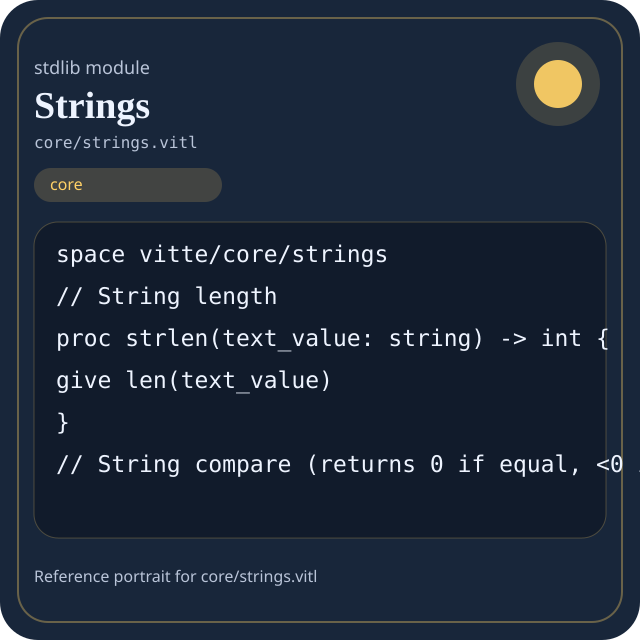

Stdlib module core/strings.vitl
This page is a wiki-style reference for one concrete stdlib file. It explains what the file owns, where it fits in the family, and how to decide whether this is the right surface to depend on.

core/strings.vitl.Family: core
Kind: public stdlib surface
Page style: this reference follows the same “encyclopedic card + portrait + usage contract” logic as the keyword pages, but for stdlib modules.
Summary
- Overview
- Purpose
- Taxonomy
- Implementation profile
- Top-level API inventory
- Position in family
- Declaration map
- Representative signatures
- How to use this module
- User example
- Keyword coverage
- Source shape
- Source landmarks
- Source organization
- Complete API catalog
- Integration boundaries
- Composition guidance
- Relationship table
- Neighbor modules
Overview
| Field | Value |
|---|---|
| Path | core/strings.vitl |
| Family | core |
| Kind | public stdlib surface |
| Line count | 339 |
| Declared procedures | 19 |
| Declared forms/picks | 0 |
`core/strings.vitl` is a public stdlib surface inside the `core` family. It should be read as one focused slice of the broader family responsibility: Portable low-level building blocks: types, strings, memory helpers, panic/runtime-adjacent basics, and reusable utility routines.
Purpose
This file should be chosen because of responsibility, not because its name “sounds close enough”. Inside the core family, it carries one focused part of the contract and keeps that responsibility separate from neighboring concerns.
- A manifest validator stores names and counters with `core` types.
- A pure helper normalizes a string or integer without touching host state.
- The same helper can be reused in compiler code, stdlib code, and user code.
Taxonomy
Think of this page as a generated encyclopedia entry rather than a hand-written tutorial. The goal is to show what kind of module this is, how dense it is, and what reading strategy makes sense before depending on it.
- Medium procedure surface: this file groups several related operations behind one namespace.
- Minimal top-level dependencies: the module reads as mostly self-contained from its opening declarations.
- Explicit export surface: the file ends with visible export declarations instead of relying only on implicit namespace discovery.
Implementation profile
This profile is inferred directly from the source text. It does not replace reading the file, but it tells you quickly whether the module is mostly declarative, loop-heavy, branch-heavy, or organized around many small exits.
| Signal | Count | What it suggests |
|---|---|---|
if | 25 | Branching density and local decision-making. |
while | 17 | Loop-heavy or iterative implementation style. |
for | 1 | Collection-style traversal at source level. |
match | 0 | Variant-driven branching or grammar-style decoding. |
let | 58 | Local state and intermediate value density. |
give | 35 | Number of explicit exit points and result shaping. |
Top-level API inventory
| Surface | Items |
|---|---|
| Procedures | strlen, strcmp, strcasecmp, streq, strne, strstr, strchr, strrchr, chrcount, strbegin, strend, strreplace_first |
| Forms | none declared at top level |
| Picks | none declared at top level |
| Constants | none declared at top level |
| Exports | * |
Imported surfaces
This file does not advertise a top-level `use` surface in its opening declarations. That often means it is either self-contained or an aggregation layer.
Position in family
This file is module 7 of 9 in the core family when ordered by path. By procedure count it ranks 8, and by line count it ranks 6. Those ranks are useful as rough signals of breadth, not as quality judgments.
Declaration map
The declaration map turns raw source into a scan-friendly catalog. It is useful when the file is large enough that a reader wants to orient by kinds of surfaces first.
| Line | Name | Kind | Role |
|---|---|---|---|
| 1 | vitte/core/strings | space | Declares the namespace that anchors this file in the stdlib tree. |
| 9 | strlen | proc | Represents one top-level surface in the file contract and should be read as part of the module boundary. |
| 14 | strcmp | proc | Represents one top-level surface in the file contract and should be read as part of the module boundary. |
| 37 | strcasecmp | proc | Represents one top-level surface in the file contract and should be read as part of the module boundary. |
| 67 | streq | proc | Represents one top-level surface in the file contract and should be read as part of the module boundary. |
| 72 | strne | proc | Represents one top-level surface in the file contract and should be read as part of the module boundary. |
| 77 | strstr | proc | Represents one top-level surface in the file contract and should be read as part of the module boundary. |
| 110 | strchr | proc | Represents one top-level surface in the file contract and should be read as part of the module boundary. |
| 126 | strrchr | proc | Represents one top-level surface in the file contract and should be read as part of the module boundary. |
| 141 | chrcount | proc | Represents one top-level surface in the file contract and should be read as part of the module boundary. |
| 158 | strbegin | proc | Represents one top-level surface in the file contract and should be read as part of the module boundary. |
| 178 | strend | proc | Represents one top-level surface in the file contract and should be read as part of the module boundary. |
| 200 | strreplace_first | proc | Represents one top-level surface in the file contract and should be read as part of the module boundary. |
| 234 | strupcase | proc | Represents one top-level surface in the file contract and should be read as part of the module boundary. |
| 255 | strdowncase | proc | Represents one top-level surface in the file contract and should be read as part of the module boundary. |
| 276 | strlstrip | proc | Represents one top-level surface in the file contract and should be read as part of the module boundary. |
| 293 | strrstrip | proc | Represents one top-level surface in the file contract and should be read as part of the module boundary. |
| 308 | strstrip | proc | Represents one top-level surface in the file contract and should be read as part of the module boundary. |
| 313 | strrepeat | proc | Represents one top-level surface in the file contract and should be read as part of the module boundary. |
| 326 | strreverse | proc | Represents one top-level surface in the file contract and should be read as part of the module boundary. |
The table is exhaustive for top-level declarations of the selected kinds. This file declares 20 matching surfaces.
Representative signatures
These signatures are shown in source order so the page keeps the feel of a reference manual, not just a keyword cloud.
proc strlen(text_value: string) -> int {(line 9)proc strcmp(a: string, b: string) -> int {(line 14)proc strcasecmp(a: string, b: string) -> int {(line 37)proc streq(a: string, b: string) -> bool {(line 67)proc strne(a: string, b: string) -> bool {(line 72)proc strstr(haystack: string, needle: string) -> int {(line 77)proc strchr(text_value: string, ch: int) -> int {(line 110)proc strrchr(text_value: string, ch: int) -> int {(line 126)proc chrcount(text_value: string, ch: int) -> int {(line 141)proc strbegin(text_value: string, prefix: string) -> bool {(line 158)proc strend(text_value: string, suffix: string) -> bool {(line 178)proc strreplace_first(text_value: string, old: string, new: string) -> string {(line 200)proc strupcase(text_value: string) -> string {(line 234)proc strdowncase(text_value: string) -> string {(line 255)proc strlstrip(text_value: string) -> string {(line 276)proc strrstrip(text_value: string) -> string {(line 293)proc strstrip(text_value: string) -> string {(line 308)proc strrepeat(text_value: string, count: int) -> string {(line 313)
The list is intentionally capped here; the source file declares 19 matching signatures in total.
How to use this module
Start by reading the file as an ownership boundary. Ask three questions: what enters this module, what stable types or procedures it exports, and what adjacent module should stay outside of it.
- Read
spaceand top-level imports first so the ownership boundary ofcore/strings.vitlis explicit. - Traverse procedures in source order; the early helpers usually explain the naming and numeric conventions used later.
- Use the source landmarks section below as a table of contents when the file is large.
- Only after that compare neighbor modules, because the right boundary choice matters more than memorizing one helper name.
User example
This example is generated from the actual stdlib module surface. Its job is not to be the smallest snippet possible; its job is to show a realistic consumer-shaped file that exercises the module and mirrors the language keywords the module itself relies on.
space demo/core_strings
proc run_example() -> string {
let result = strlen("sample")
let ready: bool = streq("sample", "sample")
let failed: bool = false
let stable: bool = ready and true
let idx: int = 0
while idx < 1 {
set idx = idx + 1
}
for sample in [1] {
let seen: int = sample
}
if ready {
give "not-ready"
}
give "ok"
let copies: f64 = 1 as f64
}
export run_exampleKeyword coverage
This table makes the “all keywords of the module” requirement auditable. It compares the detected Vitte keywords in the source file with the generated consumer example above.
| Keyword | Present in module source | Used in generated user example |
|---|---|---|
space | yes | yes |
case | yes | no |
proc | yes | yes |
let | yes | yes |
set | yes | yes |
if | yes | yes |
while | yes | yes |
for | yes | yes |
give | yes | yes |
return | yes | no |
export | yes | yes |
true | yes | yes |
false | yes | yes |
and | yes | yes |
as | yes | yes |
Keywords still not exercised directly in the generated snippet: case, return. The page still lists them here so the gap is visible.
Source shape
space vitte/core/strings
// String length
proc strlen(text_value: string) -> int {
give len(text_value)
}
// String compare (returns 0 if equal, <0 if a<b, >0 if a>b)
proc strcmp(a: string, b: string) -> int {
let i: int = 0
let n: int = len(a)
let m: int = len(b)The excerpt is not meant to replace the file. It exists to make the module recognizable at first glance, the same way a Wikipedia infobox helps the reader orient before reading the whole article.
Source landmarks
Large files are easier to retain when they have visible landmarks. When the source contains explicit section banners, they are surfaced here; otherwise the first major declarations are used as anchors.
- String Utilities — C-like string operations / strlen, strcpy, strcat, strcmp, etc
Source organization
When a file carries its own internal chaptering, those chapters usually reveal the intended reading order better than a flat symbol list. This section reconstructs that organization from the source itself.
Opening declarations
Top-level items: 1. Procedures: 0. Data surfaces: 0. Constants: 0.
First visible names: vitte/core/strings
String Utilities — C-like string operations / strlen, strcpy, strcat, strcmp, etc
Top-level items: 20. Procedures: 19. Data surfaces: 0. Constants: 0.
First visible names: strlen, strcmp, strcasecmp, streq, strne, strstr, strchr, strrchr, chrcount, strbegin
Complete API catalog
This catalog is the exhaustive file-level index for the module. It is intentionally closer to a generated encyclopedia appendix than to a tutorial summary.
Procedures
| Line | Name | Signature | Role |
|---|---|---|---|
| 9 | strlen | proc strlen(text_value: string) -> int { | Represents one top-level surface in the file contract and should be read as part of the module boundary. |
| 14 | strcmp | proc strcmp(a: string, b: string) -> int { | Represents one top-level surface in the file contract and should be read as part of the module boundary. |
| 37 | strcasecmp | proc strcasecmp(a: string, b: string) -> int { | Represents one top-level surface in the file contract and should be read as part of the module boundary. |
| 67 | streq | proc streq(a: string, b: string) -> bool { | Represents one top-level surface in the file contract and should be read as part of the module boundary. |
| 72 | strne | proc strne(a: string, b: string) -> bool { | Represents one top-level surface in the file contract and should be read as part of the module boundary. |
| 77 | strstr | proc strstr(haystack: string, needle: string) -> int { | Represents one top-level surface in the file contract and should be read as part of the module boundary. |
| 110 | strchr | proc strchr(text_value: string, ch: int) -> int { | Represents one top-level surface in the file contract and should be read as part of the module boundary. |
| 126 | strrchr | proc strrchr(text_value: string, ch: int) -> int { | Represents one top-level surface in the file contract and should be read as part of the module boundary. |
| 141 | chrcount | proc chrcount(text_value: string, ch: int) -> int { | Represents one top-level surface in the file contract and should be read as part of the module boundary. |
| 158 | strbegin | proc strbegin(text_value: string, prefix: string) -> bool { | Represents one top-level surface in the file contract and should be read as part of the module boundary. |
| 178 | strend | proc strend(text_value: string, suffix: string) -> bool { | Represents one top-level surface in the file contract and should be read as part of the module boundary. |
| 200 | strreplace_first | proc strreplace_first(text_value: string, old: string, new: string) -> string { | Represents one top-level surface in the file contract and should be read as part of the module boundary. |
| 234 | strupcase | proc strupcase(text_value: string) -> string { | Represents one top-level surface in the file contract and should be read as part of the module boundary. |
| 255 | strdowncase | proc strdowncase(text_value: string) -> string { | Represents one top-level surface in the file contract and should be read as part of the module boundary. |
| 276 | strlstrip | proc strlstrip(text_value: string) -> string { | Represents one top-level surface in the file contract and should be read as part of the module boundary. |
| 293 | strrstrip | proc strrstrip(text_value: string) -> string { | Represents one top-level surface in the file contract and should be read as part of the module boundary. |
| 308 | strstrip | proc strstrip(text_value: string) -> string { | Represents one top-level surface in the file contract and should be read as part of the module boundary. |
| 313 | strrepeat | proc strrepeat(text_value: string, count: int) -> string { | Represents one top-level surface in the file contract and should be read as part of the module boundary. |
| 326 | strreverse | proc strreverse(text_value: string) -> string { | Represents one top-level surface in the file contract and should be read as part of the module boundary. |
Exports
| Line | Name | Signature | Role |
|---|---|---|---|
| 339 | * | export * | Re-exports surfaces that the module wants to expose as part of its public boundary. |
Integration boundaries
Within core, this file should remain focused. If a future helper changes the host boundary, scheduling boundary, or data-shape boundary, it probably belongs in a neighbor module instead of being added here by convenience.
- Family responsibility: Portable low-level building blocks: types, strings, memory helpers, panic/runtime-adjacent basics, and reusable utility routines.
- Family architecture role: Use `core` when the code should remain portable and unsurprising. It is the family you reach for before involving the filesystem, network, process table, or threading runtime.
Composition guidance
Choose this module when
- Choose
core/strings.vitlwhen the main question is owned by this module rather than by transport, storage, orchestration, or user-interface code. - A manifest validator stores names and counters with `core` types.
- A pure helper normalizes a string or integer without touching host state.
- The same helper can be reused in compiler code, stdlib code, and user code.
Pause before extending it when
- Avoid extending this file when the new helper mostly changes the boundary to host I/O, runtime coordination, or foreign integration instead of staying inside
core. - Check nearby modules such as
core/algorithms.vitl,core/concurrency.vitl,core/io_helpers.vitlbefore adding convenience wrappers here.
Relationship table
This table keeps the page closer to a real encyclopedia entry: a module is easier to understand when compared with its nearest alternatives in the same family.
| Neighbor | Procedures | Data surfaces | Why compare it |
|---|---|---|---|
core/algorithms.vitl | 18 | 2 | Shares the same family boundary but carries a distinct slice of responsibility. |
core/concurrency.vitl | 32 | 8 | Shares the same family boundary but carries a distinct slice of responsibility. |
core/io_helpers.vitl | 21 | 5 | Shares the same family boundary but carries a distinct slice of responsibility. |
core/memory.vitl | 20 | 4 | Shares the same family boundary but carries a distinct slice of responsibility. |
core/panic.vitl | 29 | 5 | Shares the same family boundary but carries a distinct slice of responsibility. |
core/types.vitl | 33 | 5 | Shares the same family boundary but carries a distinct slice of responsibility. |
core/utils.vitl | 22 | 3 | Shares the same family boundary but carries a distinct slice of responsibility. |
core.vitl | 131 | 16 | Shares the same family boundary but carries a distinct slice of responsibility. |